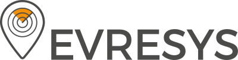
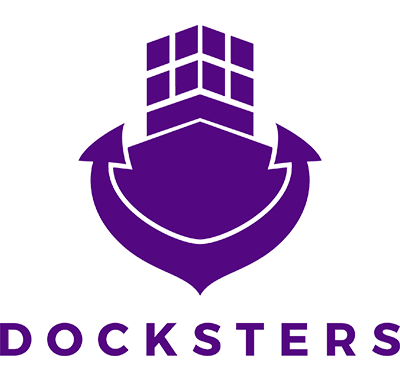

Sterke techniek, één regisseur
We kiezen partners op basis van architectuur en kwaliteit, niet andersom. SilverCloud blijft uw aanspreekpunt en zorgt dat alles op elkaar aansluit.

Fortinet
Next-generation firewalls, Zero Trust Network Access en security-driven networking. Onderdeel van onze standaard doelarchitectuur.
HPE Aruba
Switching en wifi met centraal beheer. De basis voor betrouwbare, snelle verbindingen op zorglocaties en kantoren.

Datto
Back-up en business continuity, zodat gegevens en systemen snel terug zijn als het nodig is.

TOPdesk
Servicemanagement. Wij koppelen lokalisatie aan TOPdesk, zodat meldingen en hulpmiddelen samenkomen.
Lees meerUltimo
Assetmanagement. Integratie in twee richtingen met AssetGuard: onderhoudsdata zichtbaar in de app.


Evresys
Zorgalarmering, realtime lokalisatie, leefcirkels en medewerkersveiligheid. Het platform achter Lokalisatie & Leefcirkels.
Lees meer
RSR
Ruim 50 jaar ervaring in mobiliteits- en zorghulpmiddelen. Samen koppelen we lokalisatiedata aan advies over hulpmiddelenbeleid.
Lees meer
Docksters
IoT-dataplatform voor actueel data-inzicht. SilverCloud is Solution Integration Partner.
Lees meerBenieuwd hoe dit samenkomt in uw omgeving?
We laten graag zien hoe we techniek van verschillende partijen tot één geheel maken.